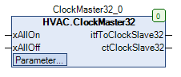
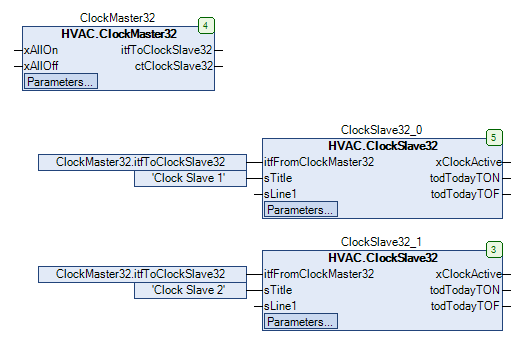
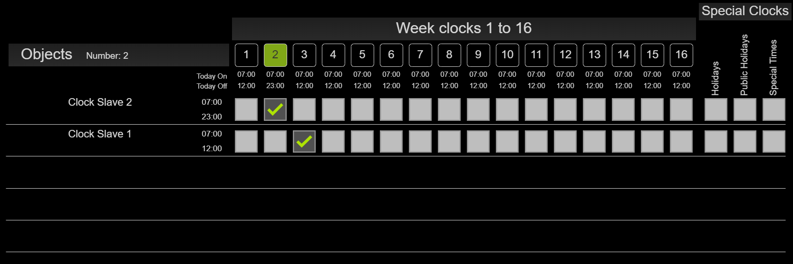

ClockMaster32 (FB)¶
FUNCTION_BLOCK ClockMaster32 EXTENDS LAT.Element IMPLEMENTS IUhrProtocol, IUhr
Short Description¶
Master function block for a clock system with 32 weekly clocks, 30 public holidays, 10 holiday periods and 5 special switching timesThe weekly clocks contain one switch-on and one switch-off time per weekday ( 448 switching points ).In addition, 30 public holidays ( country-specific ), 10 vacation periods ( start and end date ) and 5 special switching times ( on and off time and date ) can be defined.
Portrayal¶

Functional Description¶
General¶
Example representation in combination with slave clocks:

Visualization¶
Suitable visualization element from the HVACV Visu Library: ClockAssignmentOverview_Start
Portrayal¶
The slave clocks are appended automatically according to the order in which they are called in the program. The maximum number is limited to 64 slave clocks in the visual element. In the ClockMaster32 the maximum number can be adjusted via the library constant.
Interfaces Visu-Element¶
Name Datatype
Type
Init-Value
Functional Description
FB_ClockMaster32 ClockMaster32 VAR_IN_OUT Enter FB ClockMaster32 here Example: PRG.ClockMaster32
BMS_Active BOOL VAR_INPUT BMS (Building Management System) GLT (Building Management System). If BMS_Active = TRUE the input/editing of the clocks is deactivated because they can only be set via the BMS. Times can then only be viewed.
DisableInput BOOL VAR_INPUT Disable Input = TRUE Times of the weekly clocks can only be viewed and not edited.
Codesys¶
- InOut:
Scope Name Type Initial Comment Input xAllOn BOOL Central release of all outputs xClockActive of all connected slave function blocks ( FALSE = Off, TRUE = On )
xAllOff BOOL Central locking of all outputs xClockActive of all connected slave function blocks ( FALSE = Off, TRUE = On )
eCountry eCountryList eCountryList.DE Selection of country-specific public holidays
ActiveClocksVisu eActiveClocksVisu eActiveClocksVisu.Activate16Clocks Definition of the number of weekly clocks shown in the visualization
Output itfToClockSlave32 IUhrProtocol THIS^ Interface for the slave function blocks
ctClockSlave32 CAA.COUNT Number of connected slave function blocks